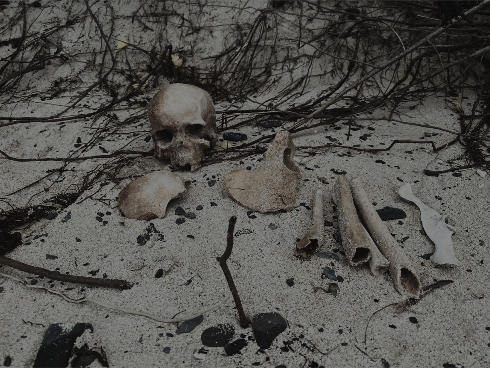
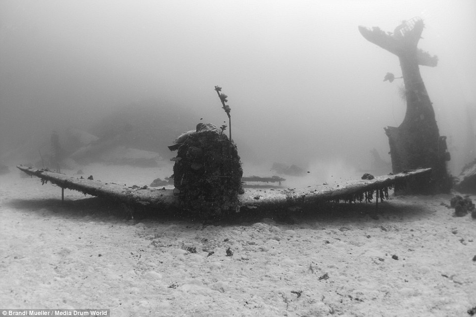

incoming signal detected...
[SYSTEM PARSING...]
[SIGNAL CONTENT]:"^e m*$t be 0n y0u, Bu! w# [@NN0t $E~ Y0*"
[SYSTEM]: signal appears to be strange transmissions from 1937...
[LOADING...]

What just happened? What is this?

Where am I?

I am in many places...always

They left me here...
So many nights passing...

I see life out in the water.
Abandon all hope...home...

Death...all around...me? us? you...

I saw this deep down...I don't remember where.